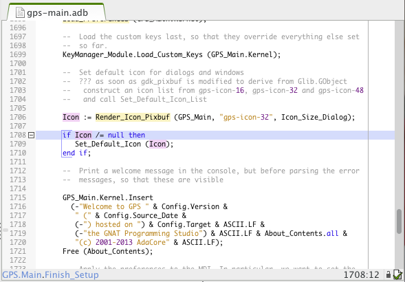
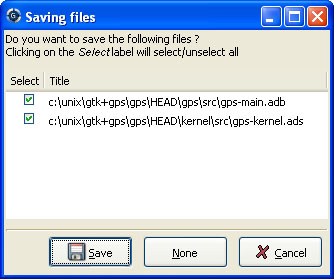

5. Editing Files¶
5.1. General Information¶
Source editing is one of the central parts of GPS. It allows access to many other functionalities, including extended source navigation and source analysis tools. You can have as many editor windows as you need. Each editor window receives annotations from other components in GPS, such as a debugger.
We use the term “pointer” to refer to the mouse pointer and “cursor” to refer to the text cursor.
The source editor provides an extensive set of features, including:
Multi cursors
You are not limited to edition via a single cursor in GPS. You can create multiple cursors that will all forward the text actions that you enter via your keyboard. This allows you to automate simple repetitive actions, in a similar way to what you would do with text macros, but in a simpler fashion.
Most of the text actions described in this documentation will be handled transparently by multi cursors, so you can delete several words at once, or select several pieces of text at once, for example.
At any time during edition with multiple cursors, you can press
Escapeto remove every cursor but the main one, so that you are back to single cursor edition. Using the mouse to move the cursor will have the same effect.
Title bar
Displays the full name of the file including path information in the title bar of the editor window.
Line number information
Located to the left of the source editor, Line numbers can be disabled using the preference. This area also displays additional information in some cases, such as the current line of execution when debugging or VCS annotations.
Scrollbar
Located to the right of the editor, this allows scrolling through the source file. The highlighted area of the scrollbar corresponds to the visible portion of the file. While you are scrolling, the editor displays a tooltip showing the file, line number, and subprogram corresponding to the center of the visible portion.
Speed column
This column, when visible, is located on the left of the editor. It allows you to view all the highlighted lines in a file at a glance. For example, all the lines containing compilation errors are displayed in the Speed Column. Use the preference to control the display of this area. It can sometimes be convenient to keep it visible at all times (to avoid resizing the editors when new information becomes available) or to hide it automatically when not needed to save space on the screen.
Status bar
Gives information about the file. It is divided in two sections, one each on the left and right of the window.
The left part of the status bar shows the current subprogram name for languages that support this capability. Currently Ada, C, and C++ have this ability. The preference controls this display.
The right section contains multiple items:
The box displays the position of the cursor in the file as a line and column number. When you have made a selection in the editor, this area also displays the size of the selection (number of lines and characters).
Next to the box is an icon showing whether the file is writable or read only. Change this state by clicking on the icon, which toggles between Writable and Read Only. This does not change the permissions of the file on disk: it only changes the writability of the view in the source editor.
When you try to save a read-only file, GPS asks for confirmation, and if possible, saves the file, keeping its read-only state.
If the file is maintained under version control and version control is supported and enabled in GPS, the next icon shows VCS information for the file: the VCS kind (e.g. CVS or subversion) followed by the revision number and, if available, the file’s status.
Contextual menu
Displayed when you right-click on any area of the source editor. See in particular Contextual_Menus_for_Source_Navigation for more details.
Syntax highlighting
Based on the programming language associated with the file, reserved words and languages constructs such as comments and strings are highlighted in different colors and fonts.
By default, GPS knows about many languages. You can also easily add support for other languages through plugins. Most languages supported by GPS provide syntax highlighting in the editor.
Automatic indentation
When enabled, lines are automatically indented each time you press the
Enterkey or the indentation key, which, by default, isTab. Change it in the key manager dialog. See The Key Shortcuts Editor.If you have selected a list of lines when you press the indentation key, GPS indents all the lines.
Tooltips
When you place the pointer over a word in the source editor, GPS displays a small window if there is relevant contextual information to display about that word. The type of information displayed depends on the current state of GPS.
In normal mode, the editor displays the entity kind and location of the declaration when this information is available, i.e., when the cross-reference information about the current file has been generated. If there is no relevant information, no tooltip is displayed. See Support for Cross-References for more information.
In addition, the editor displays documentation for the entity, if available. This is the block of comments immediately before or after the entity’s declaration (without any intervening blank lines). For example, the editor displays the following documentation for Ada:
-- A comment for A A : Integer; B : Integer; -- A comment for B C : Integer; -- Not a comment for C, there is a blank lineWhen comments appear both before and after the entity, GPS chooses the one given by the preference . In debugging mode, the editor shows the value of the variable under the pointer if the variable is known to the debugger.
Disable the automatic pop up of tool tips via the preference .
Code completion
GPS provides two kinds of code completion: a smart code completion, based on semantic information, and a text completion.
Text completion is useful when editing a file using the same words repeatedly where it provides automatic word completion. When you type the
Ctrl-/key combination (customizable through the key manager dialog) after a partial word, GPS inserts the next potential completion. Typing this key again cycles through the list of potential completions. GPS searches for text completions in all currently open files.
Delimiter highlighting
When the cursor is placed before an opening delimiter or after a closing delimiter, GPS highlights both delimiters. The following characters are considered delimiters: ()[]{}. Disable highlighting of delimiters with the preference .
Jump to a corresponding delimiter by invoking the action (which can be bound to a key in the key shortcuts editor). Invoking this action a second time returns the cursor to its original position.
Current line highlighting
Configure the editor to highlight the current line with a specified color (see the preference ).
Current block highlighting
If the preference is enabled, GPS highlights the current block of code, e.g. the current begin...end block or loop statement, by placing a vertical bar to its left.
Block highlighting also takes into account the changes made in your source code and is recomputed to determine the current block when needed. This capability is currently implemented for the Ada, C, and C++ languages.
Block folding
When the preference is enabled, GPS displays
-icons on the left side corresponding to the beginning of each block. If you click on one of these icons, all lines corresponding to this block are hidden except the first. Like block highlighting, these icons are recomputed automatically when you modify your sources.This capability is currently implemented for Ada, C, and C++ languages.
Auto save
GPS will by default periodically save your work in temporary files. This can be configured via the dialog).
Automatic highlighting of entities
When the pointer is positioned on an entity in the source editor, GPS will highlight all references to this entity in the current editor. When the pointer is moved away from the entity, the highlighting is removed.
This is controlled by the plugin
auto_highlight_occurrences.py: it can be deactivated by disabling the plugin.Details such as the presence of indications in the Speed Column or highlighting color can be customized in the Plugins section of dialog.
GPS also integrates with existing third party editors such as emacs or vi. See Using an External Editor.
5.2. Editing Sources¶
5.2.1. Key bindings¶
In addition to the standard keys used to navigate in the editor (up, down, right, left, page up, page down), the integrated editor provides a number of key bindings allowing easy navigation in the file.
There are also several ways to define new key bindings, see Defining text aliases and Binding actions to keys.
Ctrl-Shift-u |
Pressing these three keys and then holding Ctrl-Shift allow you to enter characters using their hexadecimal value. For example, pressing |
Ctrl-Shift-u-2-0 |
will insert a space character (ASCII 32, which is 20 in hexadecimal). |
Ctrl-x
Shift-delete |
Cut to clipboard. |
Ctrl-c
Ctrl-insert |
Copy to clipboard. |
Ctrl-v
Shift-insert |
Paste from clipboard. |
Ctrl-s |
Save file to disk. |
Ctrl-z |
Undo previous insertion/deletion. |
Ctrl-r |
Redo previous insertion/deletion. |
Insert |
Toggle overwrite mode. |
Ctrl-a |
Select the whole file. |
Home
Ctrl-Pgup |
Go to the beginning of the line. |
End
Ctrl-Pgdown |
Go to the end of the line. |
Ctrl-Home |
Go to the beginning of the file. |
Ctrl-End |
Go to the end of the file. |
Ctrl-up |
Go to the beginning of the line or to the previous line if already at the beginning of the line. |
Ctrl-down |
Go to the end of the line or to the beginning of the next line if already at the end of the line. |
Ctrl-delete |
Delete to the end of the current word. |
Ctrl-backspace |
Delete to the beginning of the current word. |
Shift-Alt-down |
Add a cursor to the current location and go down one line |
Shift-Alt-up |
Add a cursor to the current location and go up one line |
Ctrl-Alt-N |
jump the main cursor to the next occurrence of the selection |
Shift-Ctrl-N |
Add a cursor selecting the current selection and jump the main cursor to the next occurrence of the selection |
5.3. Recording and replaying macros¶
It is often convenient to be able to repeat a given key sequence a number of times.
GPS supports this with several different methods:
Repeat the next action
If you want to repeat the action of pressing a single key, first use the GPS action Repeat Next (bound by default to
control-u, but this can be changed as usual through the menu), entering the number of times you wish to repeat, and then pressing the key whose action you want to repeat.For example, the sequence
control-u 79 -inserts 79 characters of ‘-‘ in the current editor. This is often useful to insert separators.If you are using the Emacs mode, you can also use the sequence
control-u 30 control-kto delete 30 lines.Recording macros
To repeat a sequence of more than 1 key, record the sequence as a macro. All macro-related actions are found in the Key Shortcuts section of the preferences dialog.
First, tell GPS that it should start recording the keys you are pressing via the action. This only records keyboard events, not mouse events. GPS keeps recording the events until you select call the action.
In Emacs mode, macro actions are bound to
control-x (,control-x )andcontrol-x ekey shortcuts. For example, you can execute the following to create a very simple macro that deletes the current line wherever your cursor initially is on that line:control-x (start recordingcontrol-ago to beginning of linecontrol-kdelete linecontrol-x )stop recording
5.5. Handling of casing¶
GPS maintains a dictionary of identifiers and a corresponding casing that are used by all case-insensitive languages. When editing or reformatting a buffer for such a language, the dictionary is checked first. If GPS finds an entry for a word or a substring of a word, it is used; otherwise the specified default casing for keywords or identifiers is used. A substring is defined as a part of the word separated by underscores.
This feature is not activated for entities (keywords or identifiers) for which the casing is set to Unchanged in the or preferences.
A contextual menu named has the following entries:
Set the selected entity to be in lower case.
Set the selected entity to be in upper case.
Set the selected entity to be in mixed case (the first letter and letters before an underscore are in upper case and all other letters are in lower case).
Set the selected entity as smart mixed case, which is the same as above except that upper case letters are kept unchanged.
Add the current entity into the dictionary.
Remove the current entity from the dictionary.
To add or remove a substring from the dictionary, first select the substring in the editor. Then, the last two contextual menu entries will be:
Add the selected substring into the dictionary.
Remove the selected substring from the dictionary.
5.6. Refactoring¶
GPS includes basic facilities to refactor your code. “Refactoring” is the term used to describe manipulation of source code that does not affect the behavior of the code but helps reorganize it to make it more readable, more extendable, or make other similar improvements. Refactoring techniques are generally things that programmers have done by hand, but which can be done faster and more securely when done automatically by a tool.
A basic recommendation when you refactor your code is to recompile and test your application regularly to make sure each small modification you made did not change the behavior of your application. This is particularly true with GPS, since it relies on the cross-references information generated by the compiler. If some source files have not been recompiled recently, GPS prints warning messages indicating that the operation might be dangerous and/or only partially performed.
One of the reference books used in the choice of refactoring methods for GPS is “Refactoring”, by Martin Fowler (Addison Wesley).
5.6.1. Rename Entity¶
Clicking on an entity in a source file and selecting the contextual menu opens a dialog asking for the new name of the entity. GPS renames all instances of the entity in your application, including the definition of the entity, its body, and all calls to it. No comments are updated so you should probably manually check that the comment for the entity still applies.
GPS handles primitive operations by also renaming the operations it overrides or that override it, so any dispatching call to that operation is also renamed, allowing the application to continue to work properly. If you are renaming a parameter to a subprogram, GPS also renames parameters with the same name in overriding or overridden subprograms.
You can specify the behavior for read-only files: by default, GPS will not do any refactoring in these files and instead displays a dialog listing them. However, you can choose to make them writable just as if you had clicked on the Read-Only button in the status bar of the editor and have GPS perform the renaming in them as well.
5.6.2. Name Parameters¶
If you are editing Ada code and click on a call to a subprogram, GPS displays a contextual menu, which replaces all unnamed parameters by named parameters, for example:
Call (1, 2)
=>
Call (Param1 => 1, Param2 => 2);
5.6.3. Extract Subprogram¶
This refactoring moves some code into a separate subprogram to simplify the
original subprogram by moving part of its code elsewhere. Here is an
example from the “Refactoring” book. The refactoring takes place in the
body of the package pkg.adb, but the spec is needed so you can
compile the source code (a preliminary, but mandatory, step before you can
refactor the code):
pragma Ada_05;
with Ada.Containers.Indefinite_Doubly_Linked_Lists;
with Ada.Strings.Unbounded;
package Pkg is
type Order is tagged null record;
function Get_Amount (Self : Order) return Integer;
package Order_Lists is new
Ada.Containers.Indefinite_Doubly_Linked_Lists (Order);
type Invoice is tagged record
Orders : Order_Lists.List;
Name : Ada.Strings.Unbounded.Unbounded_String;
end record;
procedure Print_Owing (Self : Invoice);
end Pkg;
An initial implementation for this is the following:
pragma Ada_05;
with Ada.Strings.Unbounded; use Ada.Strings.Unbounded;
with Ada.Text_IO; use Ada.Text_IO;
package body Pkg is
use Order_Lists;
----------------
-- Get_Amount --
----------------
function Get_Amount (Self : Order) return Integer is
begin
return 0;
end Get_Amount;
-----------------
-- Print_Owing --
-----------------
procedure Print_Owing (Self : Invoice) is
E : Order_Lists.Cursor := First (Self.Orders);
Outstanding : Natural := 0;
Each : Order;
begin
-- <<< line 30
-- Print Banner
Put_Line ("");
Put_Line (" Customer Owes ");
Put_Line (""); -- << line 35
-- Calculate Outstanding
while Has_Element (E) loop
Each := Element (E);
Outstanding := Outstanding + Each.Get_Amount;
Next (E);
end loop;
-- Print Details
Put_Line ("Name: " & To_String (Self.Name));
Put_Line ("Outstanding:" & Outstanding'Img);
end Print_Owing;
end Pkg;
Suppose we feel the procedure Print_Owing is too long and does several independent actions. We will perform a series of three successive refactoring steps to extract the code and move it elsewhere.
First, we move the code that prints the banner. Moving it is easy, since this code does not depend on any context. We could just do a copy-paste, but then we would have to create the new subprogram. Instead, we select lines 30 to 35 and then select the contextual menu. GPS removes those lines from the subprogram Print_Owing and creates a new procedure Print_Banner (the name is specified by the user; GPS does not try to guess a name). Also, since the chunk of code that is extracted starts with a comment, GPS automatically uses that comment as the documentation for the new subprogram. Here is the relevant part of the resulting file:
package body Pkg is
procedure Print_Banner;
-- Print Banner
------------------
-- Print_Banner --
------------------
procedure Print_Banner is
begin
Put_Line ("");
Put_Line (" Customer Owes ");
Put_Line ("");
end Print_Banner;
... (code not shown)
procedure Print_Owing (Self : Invoice) is
E : Order_Lists.Cursor := First (Self.Orders);
Outstanding : Natural := 0;
Each : Order;
begin
Print_Banner;
-- Calculate Outstanding
while Has_Element (E) loop
Each := Element (E);
Outstanding := Outstanding + Each.Get_Amount;
Next (E);
end loop;
-- Print Details <<< line 54
Put_Line ("Name: " & To_String (Self.Name));
Put_Line ("Outstanding:" & Outstanding'Img); -- line 57
end Print_Owing;
end Pkg;
A more interesting example is when we want to extract the code to print the
details of the invoice. This code depends on one local variable and the
parameter to Print_Owing. When we select lines 54 to 57 and
extract it into a new Print_Details subprogram, GPS
automatically decides which variables to extract and whether they should
become parameters of the new subprogram or local variables. In the former
case, it also automatically decides whether to create in,
out or in out parameters. If there is a single out
parameter, GPS automatically creates a function instead of a procedure.
GPS uses the same name for the local variable for the parameters. Often, it makes sense to recompile the new version of the source and apply the refactoring to have more specific names for the parameters, or the refactoring so that calls to the new method uses named parameters to further clarify the code:
... code not shown
procedure Print_Details
(Self : Invoice'Class;
Outstanding : Natural);
-- Print Details
-------------------
-- Print_Details --
-------------------
procedure Print_Details
(Self : Invoice'Class;
Outstanding : Natural)
is
begin
Put_Line ("Name: " & To_String (Self.Name));
Put_Line ("Outstanding:" & Outstanding'Img);
end Print_Details;
procedure Print_Owing (Self : Invoice) is
E : Order_Lists.Cursor := First (Self.Orders);
Outstanding : Natural := 0;
Each : Order;
begin
Print_Banner;
-- Calculate Outstanding
while Has_Element (E) loop
Each := Element (E);
Outstanding := Outstanding + Each.Get_Amount;
Next (E);
end loop;
Print_Details (Self, Outstanding);
end Print_Owing;
Finally, we want to extract the code that computes the outstanding balance. When this code is moved, the variables E and Each become dead in Print_Owing and are moved into the new subprogram (which we call Get_Outstanding). The initial selection should include the blank lines before and after the code to keep the resulting Print_Owing simpler. GPS automatically ignores those blank lines. Here is the result of that last refactoring
... code not shown
procedure Get_Outstanding (Outstanding : in out Natural);
-- Calculate Outstanding
---------------------
-- Get_Outstanding --
---------------------
procedure Get_Outstanding (Outstanding : in out Natural) is
E : Order_Lists.Cursor := First (Self.Orders);
Each : Order;
begin
while Has_Element (E) loop
Each := Element (E);
Outstanding := Outstanding + Each.Get_Amount;
Next (E);
end loop;
end Get_Outstanding;
procedure Print_Owing (Self : Invoice) is
Outstanding : Natural := 0;
begin
Print_Banner;
Get_Outstanding (Outstanding);
Print_Details (Self, Outstanding);
end Print_Owing;
The final version of Print_Owing is not perfect. For example, passing the initial value 0 to Get_Outstanding is useless and, in fact, it should probably be a function with no parameter. But GPS already saves a lot of time and manipulation even given these imperfections.
Finally, a word of caution: this refactoring does not check that you are starting with valid input. For example, if the text you select includes a declare block, you should always include the full block, not just a part of it (or select text between begin and end). Likewise, GPS does not expect you to select any part of the variable declarations, just the code.
5.7. Using an External Editor¶
GPS is integrated with a number of external editors, in particular emacs and vi. The choice of the default external editor is done in the preference.
The following values are recognized:
gnuclient
This is the recommended client. It is based on Emacs, but needs an extra package to be installed. This is the only client providing a full integration in GPS, since any extended lisp command can be sent to the Emacs server.
By default, gnuclient opens a new Emacs frame for every file you open. You might want to add the following code to your
.emacsfile (create one if needed) so that the same Emacs frame is reused each time:(setq gnuserv-frame (car (frame-list)))
See http://www.hpl.hp.com/personal/ange/gnuserv/home.html for more information.
emacsclient
This is a program that is always available if you have installed Emacs. As opposed to starting a new Emacs every time, it reuses an existing Emacs sessions, so it is extremely fast to open a file.
emacs
This clients start a new Emacs session every time a file needs to be opened. You should use emacsclient instead, since it is much faster and makes it easier to copy and paste between multiple files. The only reason to use this external editor is if your system does not support emacsclient.
vim
Vim is a vi-like editor that provides a number of enhancements, for example, syntax highlighting for all languages supported by GPS. Selecting this external editor starts an xterm (or command window, depending on your system) with a running vim process editing the file.
One limitation of this editor is that if GPS needs to open the same file a second time, it opens a new editor instead of reusing the existing one.
To enable this capability, the xterm executable must be found in the PATH and thus this is not supported on Windows systems. On Windows systems, use the program editor instead.
vi
This editor works exactly like vim, but uses the standard vi command instead of vim.
custom
Specify any external editor by choosing this entry. Specify the complete command line used to call the editor in the preference.
none
No external editor is used and the contextual menus do not appear.
In the cases that require an Emacs server, the project file currently used in GPS is set appropriately the first time Emacs is spawned. This means that if you load a new project in GPS or modify the paths of the current project, you should kill any running Emacs, so a new one is spawned by GPS with the appropriate project.
Alternatively, explicitly reload the project from Emacs itself by using the menu in emacs (if ada-mode is correctly installed).
The preference lets you choose to use an external editor every time you double-click on a file, instead of opening GPS’s own editor.
5.8. Using the Clipboard¶
This section is of interest to X Window System users who are used to cutting and pasting with the middle mouse button. In the GPS text editor, as in many recent X applications, the GPS clipboard is set by explicit cut/copy/paste actions, either through menu items or keyboard shortcuts, and the primary clipboard (i.e. the ‘middle button’ clipboard) is set to the current selection.
Therefore, copy/paste between GPS and other X applications using the primary clipboard still work provided there is text currently selected. The GPS clipboard, when set, overrides the primary clipboard.
By default, GPS overrides the X mechanism. To prevent this, add the following line:
GPS.INTERNAL.OVERRIDE_MIDDLE_CLICK_PASTE = no
to your traces.cfg file (typically in ~/.gps/). Note that
the X mechanism pastes all attributes of text, including coloring and
editability, which can be confusing.
See http://standards.freedesktop.org/clipboards-spec/clipboards-latest.txt for more information.
5.9. Saving Files¶
After you have finished editing your files, you need to save them. Do so by selecting the menu, which saves the currently selected file.
Use the menu if you want to save the file with another name or in another directory.
If you have multiple files to save, use the menu, which opens a dialog listing all the currently modified editors. Select which ones should be saved and click on Save to save those editors.
When calling external commands, such as compiling a file, if the preference is set to 0, this same dialog is also used to make sure the external command sees your changes. If the preference is enabled, editors are saved automatically.
Conveniently select or unselect all the files at once by clicking on the title of the first column (labeled Select). This toggles the selection status of all files.
If you press Cancel instead of Save, nothing is saved and the action that displayed this dialog is also canceled. Such actions can be, for example, starting a compilation command, a VCS operation, or quitting GPS with unsaved files.
5.10. Printing Files¶
GPS lets you configure how printing is performed, via its External Commands/Print command preference.
This program is required for Unix systems, and is set to lp by default. Other popular choices include a2ps which provides pretty-printing and syntax highlighting.
On Windows, this preference is optional and the preference is empty by default since GPS provides built-in printing. If you specify an external tool, such as the PrintFile freeware utility available from http://www.lerup.com/printfile/descr.html, GPS uses that.